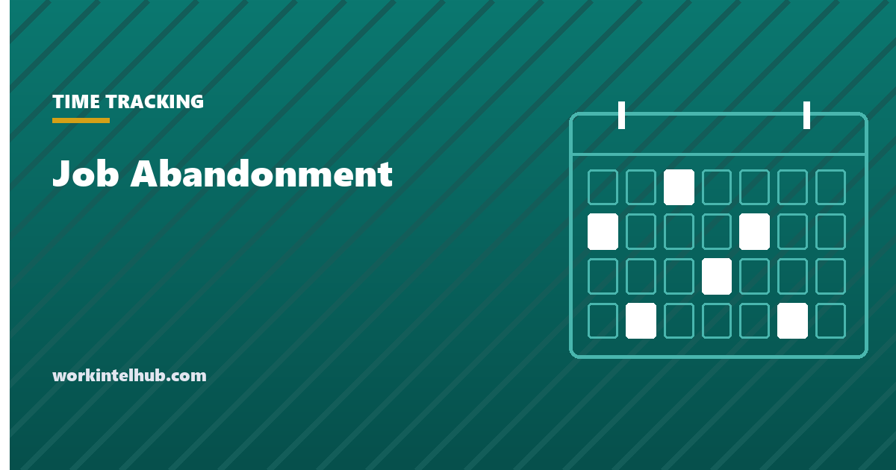

Job Abandonment

Job abandonment is when an employee stops coming to work, does not contact the employer, and does not return, so that the employer treats the absence as a voluntary resignation rather than a dismissal.
Most policies set the line at three consecutive scheduled shifts with no call and no show. That number is a convention, not a law, and there are three sets of rules that can override it: federal leave regulations, the state's unemployment insurance definition, and the state's final-pay deadline. A policy that ignores them produces a termination that looks tidy on the day and unravels at the first challenge. This page covers the policy, the letter, and the checks that come before sending it.
What counts, and what does not
Three elements have to be present together: the employee is absent from scheduled work, they have not notified anyone, and the absence has continued past the period the policy names. Remove any one and it is something else.
| Situation | Job abandonment? | Treat as |
|---|---|---|
| Three no-call, no-show shifts, no response to contact | Yes, once the policy period has run | Voluntary resignation, documented |
| Absent but a family member called in | No | Notice was given; follow the leave process |
| Absent, then returns with a hospital discharge note | No | Possible FMLA or ADA situation, see below |
| Did not return on the agreed date after approved leave | Possibly, after contact attempts | Same process, starting from the return date |
| Walked out mid-shift saying "I quit" | No | Verbal resignation; confirm in writing |
| Missed one shift, no call | No | Attendance issue under the normal policy |
The distinction matters because job abandonment is classified as a voluntary separation. That classification is what the employer relies on to contest unemployment benefits and to show that nobody was dismissed for a prohibited reason. Every step below exists to make that classification hold.
How many days
Three consecutive scheduled working days is the most common line, and for most employers in most states it is defensible. Two things should shape the choice.
The state unemployment rule may set a longer period. New Jersey's regulation, N.J.A.C. 12:17-9.11, says an employee "who is absent from work for five or more consecutive work days and who without good cause fails to notify the employer of the reasons for his or her absence shall be considered to have abandoned his or her employment." An employer in New Jersey with a three-day policy has terminated someone the state does not yet regard as having quit, which weakens its position if the former employee claims benefits. Check the definition your own state's unemployment agency uses before fixing the number, and set the policy at or above it.
The count runs from the first missed scheduled shift, not from calendar days. Someone who works Monday to Wednesday and misses Thursday has one no-show, not three, by the following Monday. The policy should say "consecutive scheduled shifts" so that part-time patterns are counted correctly.
Whatever number you choose, the period is the minimum before the process starts. It is not a licence to terminate on the morning of day four without having tried to reach the person.
Three checks before the letter goes out
This is the part the policy templates skip, and it is where abandonment terminations fail.
1. Could this be protected leave? Under the FMLA regulations at 29 CFR 825.303, when the need for leave is unforeseeable an employee must give notice "as soon as practicable" and must normally follow the employer's usual call-in procedure. But the same regulation carves out the emergency: "if an employee requires emergency medical treatment, he or she would not be required to follow the call-in procedure until his or her condition is stabilized and he or she has access to, and is able to use, a phone." It also allows a family member or other spokesperson to give notice on the employee's behalf. An employee who was in hospital for four days and could not call has not abandoned the job, and a termination letter dated day four is the document that proves the employer did not check.
2. Has anyone actually tried to reach them? Not one voicemail. A phone call each missed day, a text or email, a call to the emergency contact on file, and a record of every attempt with the date and time. If the person is unreachable because they are incarcerated, in hospital, or dealing with a death, the emergency contact usually knows, and that is the point at which the situation stops being abandonment.
3. Is there anything in the recent record that changes the picture? A pending accommodation request, a leave application, a complaint the employee raised, a disciplinary process that was under way. None of these prevent a genuine abandonment from being treated as one, but each is a reason the person may later argue the "resignation" was in fact a dismissal, and each is a reason to involve HR before the letter rather than after.
Only when all three come back clear does the absence become a separation. The attendance record is what shows the sequence, which is one of the better arguments for keeping it accurately.
The policy, for the handbook
Keep it short, keep it in the employee handbook next to the attendance policy, and have people acknowledge it on joining. Copy from here.
Employees who are unable to report for a scheduled shift must notify [manager or named contact] before the start of the shift, or as soon as it is practicable to do so, by [phone, app or method].
An employee who is absent for [three] consecutive scheduled shifts without notifying the company, and who has not responded to the company's attempts to make contact, will be considered to have voluntarily resigned by job abandonment, effective the last day worked.
Before treating an absence as job abandonment, the company will attempt to contact the employee by phone and in writing on each day of absence, will contact the employee's listed emergency contact, and will consider whether the absence may be covered by protected leave or another legal entitlement.
An employee who believes their absence has been treated as job abandonment in error, or who was unable to make contact for reasons beyond their control, should contact [HR contact] as soon as they are able. The company will review the circumstances before finalising the separation.
Final wages and any accrued paid time off will be paid in accordance with [state] law.
The third and fourth paragraphs are the ones to keep if you cut anything. They commit the company to the checks above, which is what makes the separation defensible, and they give a person with a genuine reason a route back before the file is closed.
The process, day by day
- Day 1, first no-show. Manager calls, leaves a message, sends a text or email, and logs the attempt with the time. This is an ordinary attendance step.
- Day 2. Same again. Manager notifies HR that a second consecutive shift has been missed.
- Day 3. HR calls, then calls the emergency contact. Written notice goes out the same day by a method that records delivery, stating that the absence will be treated as resignation if no contact is made by a stated deadline, usually five business days from the date of the letter.
- The deadline passes. HR runs the three checks above one final time and confirms nothing has come in through any channel, including the emergency contact.
- Separation. The termination letter is sent, the separation is recorded as voluntary with the effective date as the last day worked, and final pay is processed on the state's deadline. Company property and system access are dealt with as for any leaver.
- If the person reappears with a reason that would have been protected leave, reinstate and process the leave. The cost of doing so is small; the cost of defending the alternative is not.
The job abandonment letter
Two letters, in fact. The first is the warning sent on day three; the second confirms the separation after the deadline. Both go by a method that records delivery, and the first should also go by email and text, because the aim is to reach the person, not to prove you posted something.
Dear [name],
You have not reported for your scheduled shifts on [dates], and we have been unable to reach you by phone on [dates] or by email on [dates].
Under the company's attendance policy, an absence of [three] consecutive scheduled shifts without notice is treated as a voluntary resignation. Before we take that step, we want to hear from you. If there is a reason you have been unable to contact us, including a medical emergency or another situation beyond your control, please tell us and we will consider it.
Please contact [HR contact] at [phone and email] by [date]. If we have not heard from you by that date, we will conclude that you have resigned by job abandonment, effective [last day worked], your last day worked.
Yours sincerely,
[name]
Dear [name],
Further to our letter of [date], we have not received any contact from you. In line with the company's policy, your employment is recorded as having ended by voluntary resignation on [last day worked].
Your final pay, including [accrued PTO if payable], will be paid on [date] to the account on file. Information on continuing benefits, where applicable, is enclosed. Please return [company property] by [date].
If you believe this decision has been made in error, contact [HR contact] at [phone and email].
Yours sincerely,
[name]
Final pay and unemployment
Final pay follows the state's rule for a resignation without notice, and that rule can be tight. Under California Labor Code section 202, an employee who quits without giving 72 hours' notice must be paid "not later than 72 hours thereafter". An abandonment that is finalised on day eight has, on a strict reading, a final-pay clock that started earlier than the letter, which is a reason to process pay on the day the separation is confirmed rather than at the next payroll run. Other states allow until the next regular payday; some require accrued vacation to be paid out and some do not. Check yours before the second letter goes.
Unemployment benefits are the reason the voluntary classification matters. A person who quit without good cause is generally ineligible; a person who was dismissed usually is not. When a former employee claims benefits after an abandonment, the agency will ask the employer to show that the absence met the state's own definition and that reasonable attempts at contact were made. The logged calls, the letter and the delivery record are that evidence. Where the state definition is longer than your policy, as in New Jersey, expect the claim to be decided on the state's number.
On the wider recording of hours and absences that this process draws on, our PTO tracking guide covers how to keep leave balances that survive this kind of scrutiny.
Key takeaways
- Job abandonment needs three things together: absence from scheduled work, no notice, and the policy period elapsed. It is recorded as a voluntary resignation.
- Three consecutive scheduled shifts is the convention. Check your state's unemployment definition first: New Jersey's regulation says five or more.
- Under 29 CFR 825.303 an employee needing emergency medical treatment is excused from the call-in procedure until stabilised and able to use a phone. Check for this before the letter.
- Log a contact attempt every missed day, call the emergency contact, and send written notice with a deadline by a method that records delivery.
- Review the recent record for accommodation requests, leave applications or complaints before finalising, and involve HR before the letter rather than after.
- Final pay follows the state's rule for quitting without notice. In California that is within 72 hours, so process it when the separation is confirmed.
- If the person reappears with a reason that would have been protected leave, reinstate. It is cheaper than defending the alternative.
Frequently asked questions
What is job abandonment?
Job abandonment is when an employee stops reporting for scheduled work, does not notify the employer, and does not return, so that after a period set in policy the employer treats the absence as a voluntary resignation rather than a dismissal.
How many days of no-call, no-show is job abandonment?
Most policies use three consecutive scheduled shifts. That is a convention rather than a legal rule, and some state unemployment regulations use a longer period: New Jersey's says five or more consecutive work days. Set the policy at or above your state's definition.
Is job abandonment a termination or a resignation?
It is recorded as a voluntary resignation, effective the last day worked. That classification is what an employer relies on when contesting an unemployment claim, and it only holds if the employer followed its own policy, attempted contact and checked for protected reasons.
Can an employee be fired for job abandonment while on FMLA leave?
Not for the leave itself. Under 29 CFR 825.303, an employee needing emergency medical treatment is not required to follow the call-in procedure until their condition is stabilised and they can use a phone, and a family member may give notice on their behalf. An absence that turns out to be an emergency is not abandonment.
What should a job abandonment letter say?
The dates missed, the contact attempts made, the policy that applies, an invitation to explain any reason the person could not make contact, a deadline for responding, and what will happen if they do not. A second letter after the deadline confirms the separation, the final pay date and how to return property.
Does job abandonment disqualify someone from unemployment benefits?
Usually, because it is treated as quitting without good cause. The employer will need to show the absence met the state's definition and that reasonable attempts at contact were made, so the logged calls and the delivered letter are the evidence that decides the claim.
When is final pay due after job abandonment?
It follows the state's rule for an employee who quits without notice. In California, Labor Code section 202 makes wages due within 72 hours of quitting. Other states allow until the next regular payday. Process it when the separation is confirmed rather than waiting for the next payroll run.
What if the employee comes back after the termination letter?
If they have a reason that would have been protected leave, such as hospitalisation, reinstate and process the leave. If they simply chose not to make contact, the separation stands, but document the conversation and the reason given.